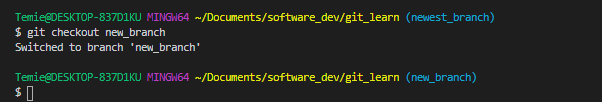
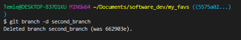

Using git can sometimes be frustrating and fun! here is my go to git command in which i find very intriguing and i find myself using it alot Git Branch . I know very basic yea! ... Well, it is my favorite!
A GitHub branch is used to work with different versions of a repository at the same time. There is the default branch, also known as the master branch while creating a repository, and other branches for development.New Branches are for bug fixes and feature work separate from the master branch. When changes are ready, they can be merged into the master branch. If you make changes to the master branch while working on a new branch, these updates can be pulled in.
One would ask, How can you create a branch? When do you use git branch? How do you use it? Well ..
In other to create a branch, we need type git branch in the terminal. so as to see a list of all your branches.
there would be a single branch called master.
This is the default branch for all Git repositories.
Usage: git branch

To create a new branch we use the git checkout command with the -b flag(where '-' is enforce and 'b' is branch) and then pass in a name of a branch.
Usage: git checkout -b NAME_OF_BRANCH

Prehaps, we want to move to another branch that has been created before, we use the git checkout command and then state the name of a branch.
Usage: git checkout NAME_OF_BRANCH

To delete a branch, we leave that branch and then run git branch -D (where D is delete)
Usage:git branch -D NAME_OF_BRANCH

To see all of the branches we created, we can type git branch -a.(where 'a' is all).
The -a flag will include remote branches (branches on GitHub or other remote locations).
Usage: git branch -a